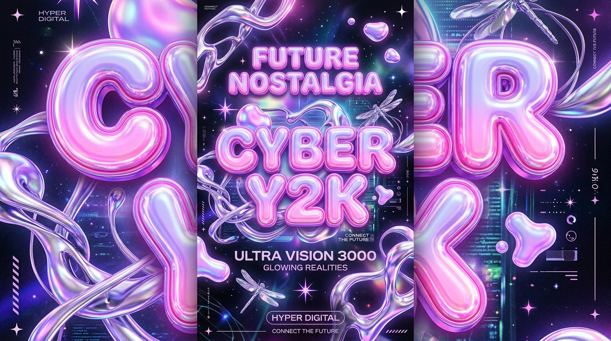

流动铬合金反光、充气果冻塑料 3D 视觉与先锋千禧美学！重构世纪之交人类对赛博空间与未来主义的狂想。

高反射流体在三维空间中自由形变，打破几何边界的硬朗秩序。
饱满圆润的胶囊字形与 Q 弹悬停反馈，塑造极具感染力的视觉张力。
多层高斯折射与极光渐变，交织出属于千禧一代独特的未来主义浪漫。
从影视特效到 3D 字体设计，水银般流动的镀铬金属反光，凝聚着人类对千禧纪元科技腾飞的纯粹乐观想象。
回顾第一代 iMac G3 半透明彩色外壳与可换肤播放器，当数字化 UI 第一次被赋予物理触觉温度与个性宣泄。